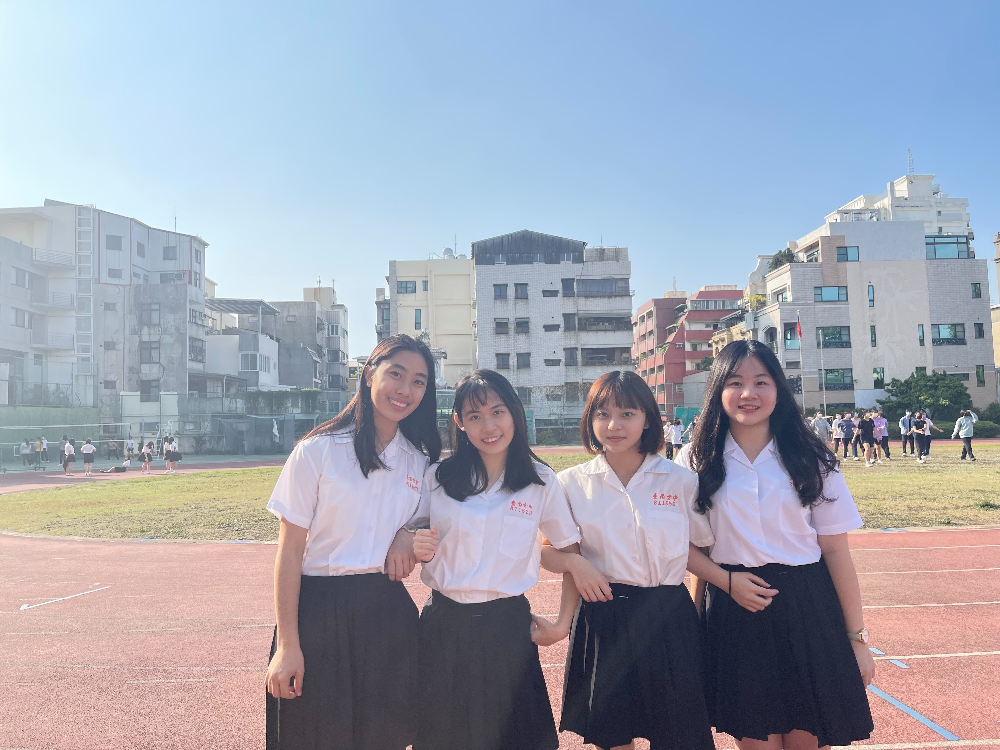
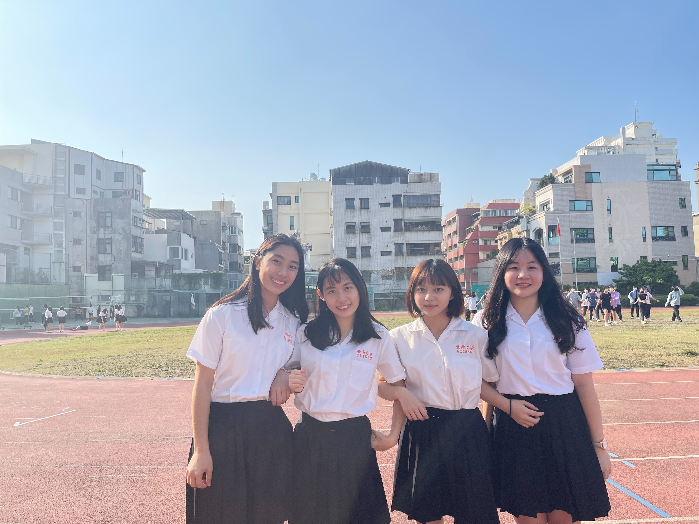
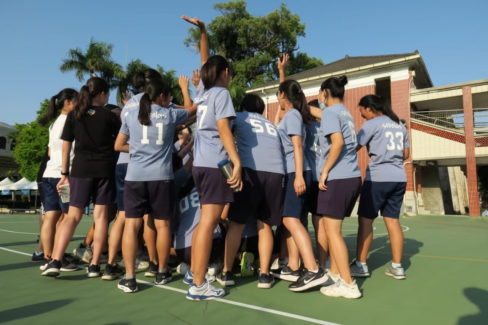
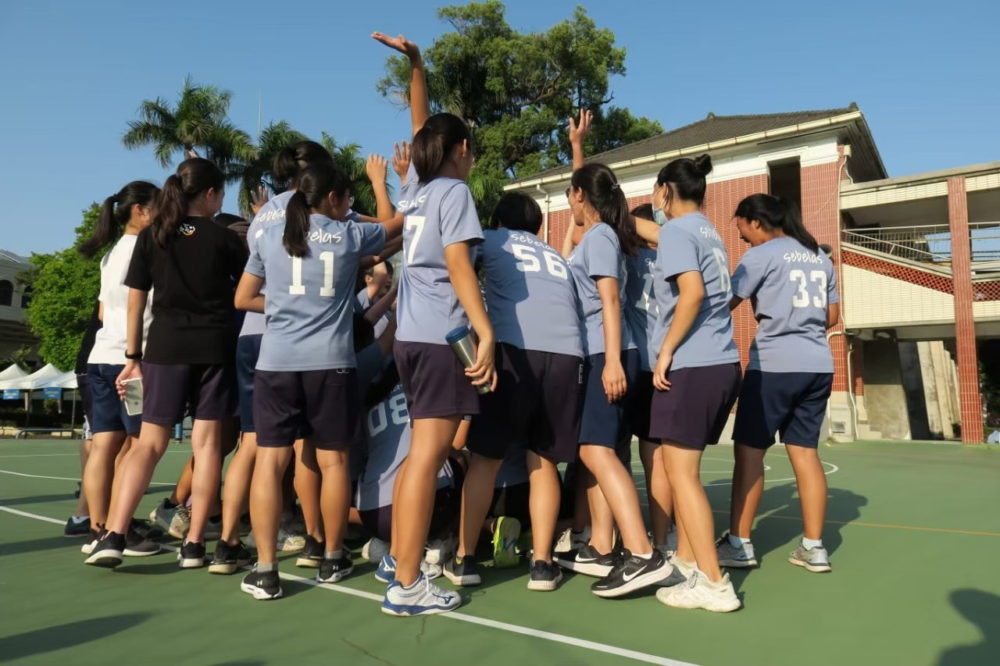
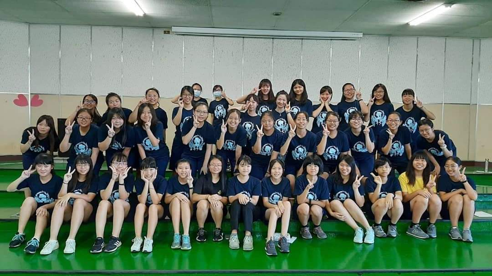
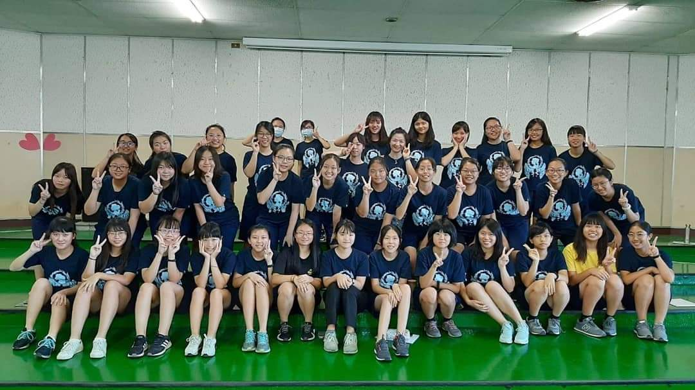

 



 

The Ultimate School Store
Our school store can truly be called the strongest on the planet! There’s nothing they can’t sell, from the most basic lunch boxes and snacks to Häagen-Dazs ice cream and Dyson vacuum cleaners. Every time I see what they offer, I think, "Wow, they even sell this!". They also provide a service for cooking instant noodles. After 2:30 PM each day, you just need to buy a pack of instant noodles from the front, hand it to the kitchen staff in the back, and say you want it cooked. A few minutes later, you'll receive a steaming bowl of noodles loaded with vegetables, meat, and an egg—it's incredibly fragrant when you take it back to the classroom!
The Best Hot Food Section
For lunch, besides ordering bento from the cooperative, you can also buy from the hot food section. I remember when I first entered TNGS, the director mentioned that our hot food section has the best food in all of Taiwan. Statistically, each student gains an average of 7 kilograms from enrollment to graduation! At first, I didn’t believe it, but by graduation, I found myself having gained quite a bit—it's all the hot food section's fault! The most popular item is from Sister He, who sells not only fish cake but also toasted bread. You can choose whatever fillings you want in the toast, as long as she has the ingredients. The most famous and must-try item for every TNGS stident is the Chocolate Kara Chicken, which consists of toast spread with chocolate sauce and filled with Kara chicken. The first time you hear the name, you might think the combination sounds strange, but once you try it, you’ll fall in love—it's incredibly delicious! Even during school celebrations, the hot food section is packed with people coming back just to enjoy the Chocolate Kara Chicken.
Vollyball
I don’t know why, but everyone at TNGS loves playing volleyball! Even if you’ve never played before in junior high school, after three years here, you’ll reach a decent level. After classes, all 12 volleyball courts are packed with people, and sometimes you even have to head downstairs early just to claim a court. The annual volleyball league draws a lot of attention; the small gym fills up with a huge crowd from the school, with everyone skipping class just to watch the matches. There’s also a wide variety of jerseys, commemorative T-shirts, charms, and pillows—it's clear that the enthusiasm Tainan girls have for volleyball is something you can’t underestimate!
Sounds in TNGS
When it comes to the sounds that remind me of TNGS, the first one that comes to mind is the sound of airplanes. Since the school is right under a flight path, there are planes flying over all the time. We often have to wait for them to pass before continuing class, making it hard to hear the teacher. The second sound is the school store's announcement of "Insufficient balance, please recharge." We pay by scanning barcodes instead of using cash, but sometimes we forget to top up our balance, and the machine blares out "Insufficient balance, please recharge" at full volume. It's so loud that the whole store hears it, and suddenly, all eyes are on you—everyone knows you forgot to recharge. It’s really awkward! Lastly, there's the ending of the school song with the shout of "Hou Hei." At first, everyone is quiet and doesn’t sing along, but by the end, we all shout "Hou Hei" loudly and in perfect unison!
Bamboo and Coconut Harmony
First Girls' School often collaborates with First High School to organize various activities, including student council events, clubs, and even class-based events. One such event is "Bamboo and Coconut Harmony," a singing competition held jointly by the two schools. The bamboo symbolizes Tainan First High, while the coconut represents Tainan Girls' High. Participants can register as solo performers or form groups to perform together, and every competition showcases incredibly talented performances!